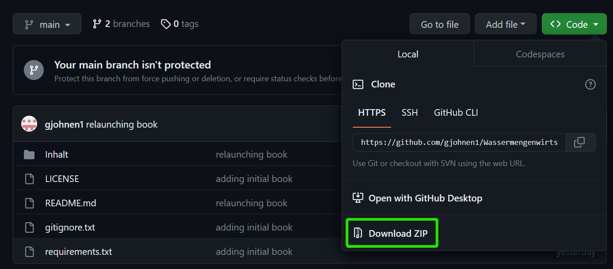

Ausführen von Code in Jupyter Notebooks#
In Jupyter Notebooks kann Code interaktiv ausgeführt werden. Dies ermöglicht es, den Code schrittweise auszuführen und die Ergebnisse zu überprüfen.
Um Code in einer Zelle auszuführen, gibt es verschiedene Möglichkeiten:
Klicken auf den “Run”-Button: In der Symbolleiste oben im Notebook befindet sich ein Button mit einem Pfeilsymbol. Durch Klicken auf diesen Button wird der Code in der aktuellen Zelle ausgeführt. Alternativ kann auch die Tastenkombination “Shift + Enter” verwendet werden, um den Code auszuführen und zur nächsten Zelle zu gelangen.
Verwendung der Tastenkombination “Ctrl + Enter”: Falls nur der Code in der aktuellen Zelle ausgeführt werden soll, ohne zur nächsten Zelle zu wechseln, kann die Tastenkombination “Ctrl + Enter” verwendet werden. Dadurch wird der Code ausgeführt, und der Cursor verbleibt in derselben Zelle.
Verwendung der Tastenkombination “Shift + Enter”: Falls der Code in der aktuellen Zelle ausgeführt werden soll und direkt zur nächsten Zelle zu gewechselt werden soll, kann die Tastenkombination “Shift + Enter” verwendet werden. Dadurch wird der Code ausgeführt, und zur nächsten Zelle gesprungen.
Es ist wichtig zu beachten, dass der Code in den Zellen in der Reihenfolge ausgeführt wird, in der sie ausgeführt werden. Wenn also Code in einer bestimmten Zelle geändert und erneut ausgeführt wird, werden die Ergebnisse entsprechend aktualisiert.
Das Ausführen von Code in Jupyter Notebooks ermöglicht eine iterative Entwicklung und erleichtert das Experimentieren und die Datenanalyse. Probiert es hier aus, indem Ihr den Code in den Codezellen dieses Notebooks ausführt!
Wichtige Funktionen in Python#
Python bietet eine Vielzahl von Funktionen, die das Programmieren erleichtern. Hier sind einige der wichtigsten Funktionen:
Variablen#
a = 1.1
type(a)
float
b = '1.1'
type(b)
str
Umformungen#
a = int(1.1)
print(a)
1
float(a)
1.0
str(a)
'1'
Funktionen#
def square():
'''
Diese Funktion berechnet das Quadrat von 2.
'''
return 2 * 2
square()
4
def square(x):
'''
Diese Funktion berechnet das Quadrat einer gegebenen Zahl x.
Parameter:
x (int oder float): Die Zahl, deren Quadrat berechnet werden soll.
Rückgabewert:
int oder float: Das Quadrat von x.
'''
return x ** 2
square(23)
529
If-Anweisungen#
zahl = 10
if zahl > 0:
print("Die Zahl ist positiv.")
else:
print("Die Zahl ist nicht positiv.")
Die Zahl ist positiv.
Beispiel: Datenimport, Datenqualitätsprüfung und Workflow#
Einführung#
Die Überprüfung der Datenqualität ist ein unvermeidlicher und entscheidender Schritt in jeder Analyse. Häufig werden Daten verwendet, die extern erhoben wurden, oder aus vielen verschiedenen Quellen stammen. In diesem Kurs arbeiten wir mit Wasserstands- und Durchflussdaten, die vom Water Survey of Canada (WSC) und anderen Quellen gesammelt wurden. In der Berufspraxis die Verantwortung der Datenqualitätsprüfung allein bei dem/der Ingenieur:in. Die Daten sind oft wichtige Grundlage für Entwurfsplanung oder die Entscheidungsfindung. Datensätze aus offenen Quellen werden oft von einem Haftungsausschluss begleitet, siehe [WSC-Haftungsausschluss] (https://wateroffice.ec.gc.ca/disclaimer_info_e.html) zum Beispiel.
Da die größe der Datensätze fast überall kontinuierlich wächst, wird es immer wichtiger, automatisierte Ansätze zur Datenüberprüfung zu verwenden. Dieses Notebook bietet eine (wenn auch sehr kurze) Einführung in das programmgesteuerte Importieren und Überprüfen von Datensätzen. Es wird eine eine beispielhafte „CSV“-Datei von einem Messgerät importiert, das häufig in der hydrologischen Praxis verwendet wird. Die Größe des Datensatzes, den man manuell auf Anomalien überprüfen kann, ist allerdings begrenzt.
Beim lernen der Programmiersprache Python, gibt es ein paar triviale Aufgaben, die eventuell unnötig komplex erscheinen. Das Importieren von Daten ist eine solches Beispiel. Während man sonst auf eine einzelne Excel Datei klickt, um sie zu öffnen, und meistens das Programm bereits weiß, ob eine Zelle beispielsweise eine Zahl oder einen Text enthält, muss man in Python den Datentyp, mit dem gearbeietet wird deklarieren. Das folgende Beispiel zeigt ein häufiges Datenimportproblem und wie man damit umgeht.
Hinweis: Das unten häufig verwendete „#“-Symbol wird zum Hinzufügen von Kommentaren verwendet. Diese dienen dazu Informationen an andere Personen zu übermitteln, die den Code überprüfen oder verwenden sollen. Der Python-Interpreter ignoriert alle Zeilen, die mit „#“ beginnen.
Was zum Teufel hat das mit Hydrologie zu tun?#
Die in das Erlernen der Grundlagen der Tools investierte Zeit erspart später eventuell viele Stunden Frustration. Diese Stunden können so in die Erforschung und Prüfung hydrologischer Konzepte anhand von Beobachtungsdaten investiert werden. Grundsätzlich gilt: Eine Automatisierung der Dateiverwaltung ermöglicht das Erstellen leistungsstarker Tools.
# Bibliotheken importieren
# --> Bibliotheken sind Sammlungen von Funktionen, die von
# Open-Source-Softwareentwicklern entwickelt wurden und sich typischerweise auf die Lösung sehr spezifischer Probleme konzentrieren.
# numpy ist eine grundlegende Bibliothek für wissenschaftliches Rechnen
# basiert auf der Darstellung von Daten als Arrays
import numpy as np
# pandas ist eine Bibliothek, die "dataframes", tabellenartige Strukturen, manipuliert,
# um effizient Operationen auf großen Datensätzen auszuführen
import pandas as pd
# matplotlib ist eine Bibliothek zum Plotten
from matplotlib import pyplot as plt
Numpy-Bibliothek für grundlegende Matrix Operationen#
np.__version__
'1.24.3'
np.zeros(3)
array([0., 0., 0.])
np.ones((3,3))
array([[1., 1., 1.],
[1., 1., 1.],
[1., 1., 1.]])
k = np.arange(0,10,1)
k
array([0, 1, 2, 3, 4, 5, 6, 7, 8, 9])
k.astype(float)
array([0., 1., 2., 3., 4., 5., 6., 7., 8., 9.])
k = np.arange(-10,1,1)
np.abs(k)
array([10, 9, 8, 7, 6, 5, 4, 3, 2, 1, 0])
shape#
k = np.ones((2,5,9))
k.shape
(2, 5, 9)
k.reshape(-1).shape
(90,)
np.array([1,2,3]).reshape(-1,1).shape
(3, 1)
k.reshape(5,2,9).shape
(5, 2, 9)
k.transpose(2,1,0).shape
(9, 5, 2)
Pandas-Bibliothek zur Datenverwaltung#
pd.__version__
'2.0.1'
pd.DataFrame(np.ones((2,3)))
| 0 | 1 | 2 | |
|---|---|---|---|
| 0 | 1.0 | 1.0 | 1.0 |
| 1 | 1.0 | 1.0 | 1.0 |
df_ = pd.DataFrame(np.ones((48,3)),
columns=['sensor1','sensor2','sensor3'],
index=pd.date_range('2021',freq='H',periods=48))
df_
| sensor1 | sensor2 | sensor3 | |
|---|---|---|---|
| 2021-01-01 00:00:00 | 1.0 | 1.0 | 1.0 |
| 2021-01-01 01:00:00 | 1.0 | 1.0 | 1.0 |
| 2021-01-01 02:00:00 | 1.0 | 1.0 | 1.0 |
| 2021-01-01 03:00:00 | 1.0 | 1.0 | 1.0 |
| 2021-01-01 04:00:00 | 1.0 | 1.0 | 1.0 |
| 2021-01-01 05:00:00 | 1.0 | 1.0 | 1.0 |
| 2021-01-01 06:00:00 | 1.0 | 1.0 | 1.0 |
| 2021-01-01 07:00:00 | 1.0 | 1.0 | 1.0 |
| 2021-01-01 08:00:00 | 1.0 | 1.0 | 1.0 |
| 2021-01-01 09:00:00 | 1.0 | 1.0 | 1.0 |
| 2021-01-01 10:00:00 | 1.0 | 1.0 | 1.0 |
| 2021-01-01 11:00:00 | 1.0 | 1.0 | 1.0 |
| 2021-01-01 12:00:00 | 1.0 | 1.0 | 1.0 |
| 2021-01-01 13:00:00 | 1.0 | 1.0 | 1.0 |
| 2021-01-01 14:00:00 | 1.0 | 1.0 | 1.0 |
| 2021-01-01 15:00:00 | 1.0 | 1.0 | 1.0 |
| 2021-01-01 16:00:00 | 1.0 | 1.0 | 1.0 |
| 2021-01-01 17:00:00 | 1.0 | 1.0 | 1.0 |
| 2021-01-01 18:00:00 | 1.0 | 1.0 | 1.0 |
| 2021-01-01 19:00:00 | 1.0 | 1.0 | 1.0 |
| 2021-01-01 20:00:00 | 1.0 | 1.0 | 1.0 |
| 2021-01-01 21:00:00 | 1.0 | 1.0 | 1.0 |
| 2021-01-01 22:00:00 | 1.0 | 1.0 | 1.0 |
| 2021-01-01 23:00:00 | 1.0 | 1.0 | 1.0 |
| 2021-01-02 00:00:00 | 1.0 | 1.0 | 1.0 |
| 2021-01-02 01:00:00 | 1.0 | 1.0 | 1.0 |
| 2021-01-02 02:00:00 | 1.0 | 1.0 | 1.0 |
| 2021-01-02 03:00:00 | 1.0 | 1.0 | 1.0 |
| 2021-01-02 04:00:00 | 1.0 | 1.0 | 1.0 |
| 2021-01-02 05:00:00 | 1.0 | 1.0 | 1.0 |
| 2021-01-02 06:00:00 | 1.0 | 1.0 | 1.0 |
| 2021-01-02 07:00:00 | 1.0 | 1.0 | 1.0 |
| 2021-01-02 08:00:00 | 1.0 | 1.0 | 1.0 |
| 2021-01-02 09:00:00 | 1.0 | 1.0 | 1.0 |
| 2021-01-02 10:00:00 | 1.0 | 1.0 | 1.0 |
| 2021-01-02 11:00:00 | 1.0 | 1.0 | 1.0 |
| 2021-01-02 12:00:00 | 1.0 | 1.0 | 1.0 |
| 2021-01-02 13:00:00 | 1.0 | 1.0 | 1.0 |
| 2021-01-02 14:00:00 | 1.0 | 1.0 | 1.0 |
| 2021-01-02 15:00:00 | 1.0 | 1.0 | 1.0 |
| 2021-01-02 16:00:00 | 1.0 | 1.0 | 1.0 |
| 2021-01-02 17:00:00 | 1.0 | 1.0 | 1.0 |
| 2021-01-02 18:00:00 | 1.0 | 1.0 | 1.0 |
| 2021-01-02 19:00:00 | 1.0 | 1.0 | 1.0 |
| 2021-01-02 20:00:00 | 1.0 | 1.0 | 1.0 |
| 2021-01-02 21:00:00 | 1.0 | 1.0 | 1.0 |
| 2021-01-02 22:00:00 | 1.0 | 1.0 | 1.0 |
| 2021-01-02 23:00:00 | 1.0 | 1.0 | 1.0 |
df_.index
DatetimeIndex(['2021-01-01 00:00:00', '2021-01-01 01:00:00',
'2021-01-01 02:00:00', '2021-01-01 03:00:00',
'2021-01-01 04:00:00', '2021-01-01 05:00:00',
'2021-01-01 06:00:00', '2021-01-01 07:00:00',
'2021-01-01 08:00:00', '2021-01-01 09:00:00',
'2021-01-01 10:00:00', '2021-01-01 11:00:00',
'2021-01-01 12:00:00', '2021-01-01 13:00:00',
'2021-01-01 14:00:00', '2021-01-01 15:00:00',
'2021-01-01 16:00:00', '2021-01-01 17:00:00',
'2021-01-01 18:00:00', '2021-01-01 19:00:00',
'2021-01-01 20:00:00', '2021-01-01 21:00:00',
'2021-01-01 22:00:00', '2021-01-01 23:00:00',
'2021-01-02 00:00:00', '2021-01-02 01:00:00',
'2021-01-02 02:00:00', '2021-01-02 03:00:00',
'2021-01-02 04:00:00', '2021-01-02 05:00:00',
'2021-01-02 06:00:00', '2021-01-02 07:00:00',
'2021-01-02 08:00:00', '2021-01-02 09:00:00',
'2021-01-02 10:00:00', '2021-01-02 11:00:00',
'2021-01-02 12:00:00', '2021-01-02 13:00:00',
'2021-01-02 14:00:00', '2021-01-02 15:00:00',
'2021-01-02 16:00:00', '2021-01-02 17:00:00',
'2021-01-02 18:00:00', '2021-01-02 19:00:00',
'2021-01-02 20:00:00', '2021-01-02 21:00:00',
'2021-01-02 22:00:00', '2021-01-02 23:00:00'],
dtype='datetime64[ns]', freq='H')
df_.dtypes
sensor1 float64
sensor2 float64
sensor3 float64
dtype: object
df_['sensor1']
2021-01-01 00:00:00 1.0
2021-01-01 01:00:00 1.0
2021-01-01 02:00:00 1.0
2021-01-01 03:00:00 1.0
2021-01-01 04:00:00 1.0
2021-01-01 05:00:00 1.0
2021-01-01 06:00:00 1.0
2021-01-01 07:00:00 1.0
2021-01-01 08:00:00 1.0
2021-01-01 09:00:00 1.0
2021-01-01 10:00:00 1.0
2021-01-01 11:00:00 1.0
2021-01-01 12:00:00 1.0
2021-01-01 13:00:00 1.0
2021-01-01 14:00:00 1.0
2021-01-01 15:00:00 1.0
2021-01-01 16:00:00 1.0
2021-01-01 17:00:00 1.0
2021-01-01 18:00:00 1.0
2021-01-01 19:00:00 1.0
2021-01-01 20:00:00 1.0
2021-01-01 21:00:00 1.0
2021-01-01 22:00:00 1.0
2021-01-01 23:00:00 1.0
2021-01-02 00:00:00 1.0
2021-01-02 01:00:00 1.0
2021-01-02 02:00:00 1.0
2021-01-02 03:00:00 1.0
2021-01-02 04:00:00 1.0
2021-01-02 05:00:00 1.0
2021-01-02 06:00:00 1.0
2021-01-02 07:00:00 1.0
2021-01-02 08:00:00 1.0
2021-01-02 09:00:00 1.0
2021-01-02 10:00:00 1.0
2021-01-02 11:00:00 1.0
2021-01-02 12:00:00 1.0
2021-01-02 13:00:00 1.0
2021-01-02 14:00:00 1.0
2021-01-02 15:00:00 1.0
2021-01-02 16:00:00 1.0
2021-01-02 17:00:00 1.0
2021-01-02 18:00:00 1.0
2021-01-02 19:00:00 1.0
2021-01-02 20:00:00 1.0
2021-01-02 21:00:00 1.0
2021-01-02 22:00:00 1.0
2021-01-02 23:00:00 1.0
Freq: H, Name: sensor1, dtype: float64
df_.values
array([[1., 1., 1.],
[1., 1., 1.],
[1., 1., 1.],
[1., 1., 1.],
[1., 1., 1.],
[1., 1., 1.],
[1., 1., 1.],
[1., 1., 1.],
[1., 1., 1.],
[1., 1., 1.],
[1., 1., 1.],
[1., 1., 1.],
[1., 1., 1.],
[1., 1., 1.],
[1., 1., 1.],
[1., 1., 1.],
[1., 1., 1.],
[1., 1., 1.],
[1., 1., 1.],
[1., 1., 1.],
[1., 1., 1.],
[1., 1., 1.],
[1., 1., 1.],
[1., 1., 1.],
[1., 1., 1.],
[1., 1., 1.],
[1., 1., 1.],
[1., 1., 1.],
[1., 1., 1.],
[1., 1., 1.],
[1., 1., 1.],
[1., 1., 1.],
[1., 1., 1.],
[1., 1., 1.],
[1., 1., 1.],
[1., 1., 1.],
[1., 1., 1.],
[1., 1., 1.],
[1., 1., 1.],
[1., 1., 1.],
[1., 1., 1.],
[1., 1., 1.],
[1., 1., 1.],
[1., 1., 1.],
[1., 1., 1.],
[1., 1., 1.],
[1., 1., 1.],
[1., 1., 1.]])
df_.resample('D').mean()
| sensor1 | sensor2 | sensor3 | |
|---|---|---|---|
| 2021-01-01 | 1.0 | 1.0 | 1.0 |
| 2021-01-02 | 1.0 | 1.0 | 1.0 |
df_.resample('MIN').interpolate(method='linear')
| sensor1 | sensor2 | sensor3 | |
|---|---|---|---|
| 2021-01-01 00:00:00 | 1.0 | 1.0 | 1.0 |
| 2021-01-01 00:01:00 | 1.0 | 1.0 | 1.0 |
| 2021-01-01 00:02:00 | 1.0 | 1.0 | 1.0 |
| 2021-01-01 00:03:00 | 1.0 | 1.0 | 1.0 |
| 2021-01-01 00:04:00 | 1.0 | 1.0 | 1.0 |
| ... | ... | ... | ... |
| 2021-01-02 22:56:00 | 1.0 | 1.0 | 1.0 |
| 2021-01-02 22:57:00 | 1.0 | 1.0 | 1.0 |
| 2021-01-02 22:58:00 | 1.0 | 1.0 | 1.0 |
| 2021-01-02 22:59:00 | 1.0 | 1.0 | 1.0 |
| 2021-01-02 23:00:00 | 1.0 | 1.0 | 1.0 |
2821 rows × 3 columns
data_part = df_[['sensor1','sensor2']]
data_part
| sensor1 | sensor2 | |
|---|---|---|
| 2021-01-01 00:00:00 | 1.0 | 1.0 |
| 2021-01-01 01:00:00 | 1.0 | 1.0 |
| 2021-01-01 02:00:00 | 1.0 | 1.0 |
| 2021-01-01 03:00:00 | 1.0 | 1.0 |
| 2021-01-01 04:00:00 | 1.0 | 1.0 |
| 2021-01-01 05:00:00 | 1.0 | 1.0 |
| 2021-01-01 06:00:00 | 1.0 | 1.0 |
| 2021-01-01 07:00:00 | 1.0 | 1.0 |
| 2021-01-01 08:00:00 | 1.0 | 1.0 |
| 2021-01-01 09:00:00 | 1.0 | 1.0 |
| 2021-01-01 10:00:00 | 1.0 | 1.0 |
| 2021-01-01 11:00:00 | 1.0 | 1.0 |
| 2021-01-01 12:00:00 | 1.0 | 1.0 |
| 2021-01-01 13:00:00 | 1.0 | 1.0 |
| 2021-01-01 14:00:00 | 1.0 | 1.0 |
| 2021-01-01 15:00:00 | 1.0 | 1.0 |
| 2021-01-01 16:00:00 | 1.0 | 1.0 |
| 2021-01-01 17:00:00 | 1.0 | 1.0 |
| 2021-01-01 18:00:00 | 1.0 | 1.0 |
| 2021-01-01 19:00:00 | 1.0 | 1.0 |
| 2021-01-01 20:00:00 | 1.0 | 1.0 |
| 2021-01-01 21:00:00 | 1.0 | 1.0 |
| 2021-01-01 22:00:00 | 1.0 | 1.0 |
| 2021-01-01 23:00:00 | 1.0 | 1.0 |
| 2021-01-02 00:00:00 | 1.0 | 1.0 |
| 2021-01-02 01:00:00 | 1.0 | 1.0 |
| 2021-01-02 02:00:00 | 1.0 | 1.0 |
| 2021-01-02 03:00:00 | 1.0 | 1.0 |
| 2021-01-02 04:00:00 | 1.0 | 1.0 |
| 2021-01-02 05:00:00 | 1.0 | 1.0 |
| 2021-01-02 06:00:00 | 1.0 | 1.0 |
| 2021-01-02 07:00:00 | 1.0 | 1.0 |
| 2021-01-02 08:00:00 | 1.0 | 1.0 |
| 2021-01-02 09:00:00 | 1.0 | 1.0 |
| 2021-01-02 10:00:00 | 1.0 | 1.0 |
| 2021-01-02 11:00:00 | 1.0 | 1.0 |
| 2021-01-02 12:00:00 | 1.0 | 1.0 |
| 2021-01-02 13:00:00 | 1.0 | 1.0 |
| 2021-01-02 14:00:00 | 1.0 | 1.0 |
| 2021-01-02 15:00:00 | 1.0 | 1.0 |
| 2021-01-02 16:00:00 | 1.0 | 1.0 |
| 2021-01-02 17:00:00 | 1.0 | 1.0 |
| 2021-01-02 18:00:00 | 1.0 | 1.0 |
| 2021-01-02 19:00:00 | 1.0 | 1.0 |
| 2021-01-02 20:00:00 | 1.0 | 1.0 |
| 2021-01-02 21:00:00 | 1.0 | 1.0 |
| 2021-01-02 22:00:00 | 1.0 | 1.0 |
| 2021-01-02 23:00:00 | 1.0 | 1.0 |
Dateipfad#
Ein grundlegendes, aber enorm wichtiges Konzept besteht darin, zu verstehen, wie man eine Datei einliest, die irgendwo im Dateisystem des Computers gespeichert ist WICHTIG: Häufig ist dies auch auf einem anderen Computer, beispielsweise einem in einem Netzwerk oder einem offenen Datenrepository.
In modernen Betriebssystemen wie Windows und macOS wird meist einfach auf eine Datei geklickt und das entsprechende Programm startet und öffnet die Datei inklusive der Benutzeroberfläche. In Programmiersprachen geht es in die entgegengesetzte Richtung – Es muss explizit angegeben werden, wo sich eine Datei auf der Festplatte befindet. Es ist wichtig zu verstehen, dass Jupyter-Notebooks Dateipfade relativ zum Speicherort der Notebook-Datei interpretieren.
Die Notebook-Datei, die in dieser Demonstration verwendet wird, trägt die Bezeichnung “Einleitung_Datenimport.ipynb” und ist unter “
Laden Sie die Projektdatendatei herunter#
Es wird zunächst das Code-Repository von GitHub heruntergeladen. Dies kann über den folgenden Link geschehen: gjohnen1/Wassermengenwirtschaft_und_Klimawandel
Über die grüne Schaltfläche „Code“ kann die ZIP-Datei des Code-Repositorys heruntergeladen werden, wie unten gezeigt:

Auf den meisten Systemen wird die Datei standardmäßig im Ordner „Downloads/“ abgelegt. Die Datei kann nach dem entpacken an einen beliebigen Ort verschoben werden (Sciebo ist auch möglich). Dieser Ordner wird als Projektstammverzeichnis bezeichnet.
Dateistruktur#
Auf der Ebene des Stammverzeichnisses sieht die Struktur ungefähr wie folgt aus:
\OneDrive - Universitaet Duisburg-Essen\GitHub\repos\Wassermengenwirtschaft_und_Klimawandel
│ README.md
│ requirements.txt <--
│
└───Inhalt
│ │ config.yml
│ │ Einleitung.md
│ │ markdown.md
│ │ _toc.yml
│ │
│ └───_build
│ │ ...
│ │
│ └───img
│ │ ...
│ │
│ └───Notebook_Daten
│ │ ...
│ │
│ └───Notebooks
| │ └───Einführung <-- Dies ist der Speicherort von Einleitung_Datenimport.ipynb
│ │ └───Notebook_1
│ │ └───...
│ │
│ └───Projekt_Daten <-- Dies ist der Speicherort der Daten, die für das Projekt verwendet werden
│ │ ...
│ │
Am Ende der Dateistruktur befindet sich ein Ordner namens “Projekt_Daten”, der eine Reihe von CSV-Dateien enthält, die für die Hausarbeit verwendet werden. Es wird nun versucht die Datei “Hidden_Creek_stage_data.csv” zu öffnen.
Eine CSV-Datei einlesen#
Wenn eine Datendatei (nennen wir sie data.csv) aus diesem Notebook heraus geöffnet werden soll, kann diese einfach im selben Ordner wie diese Notebook-Datei gespeichert werden. Die CSV-Datei dann mit Pandas gelesen werden, indem wir einfach den Dateinamen verwenden:
df = pd.read_csv('data.csv')
Hinweis: Oben wird die Funktion „read_csv“ aus der Pandas-Bibliothek mit der Kurzform „pd“ aufgerufen. Der Dateipfad lautet in diesem Fall einfach „data.csv“. Zu beachten ist, dass es sich um eine Zeichenfolge handeln muss, d. h. in ‘einfache Anführungszeichen’ oder “doppelte Anführungszeichen” eingeschlossen, beides ist in Ordnung.
In den meisten Fällen sollen Daten jedoch so organisiert sein, dass diese beispielsweise in einem extra “Daten-Ordner” liegen sind anstatt in dem Ordner der Code Datei bzw. des Jupyter-Notebooks. Wenn die Datei woanders gespeichert ist, gibt es mehrere Möglichkeiten, ihren Speicherort anzugeben. Als Nächstes soll die csv-Datei “Hidden_Creek_stage_data.csv” eingelesen werden.
Wenn versucht wird, diese Datei nur mit dem Dateinamen zu öffnen, sucht die Jupyter-Schnittstelle auf der Stammebene des Projekts nach einer Datei mit diesem Namen, wird sie jedoch nicht finden.
Die Fehlermeldung wird in etwa wie folgt lauten:
FileNotFoundError Traceback (most recent call last)
<ipython-input-5-b872b6bb0ac8> in <module>
3 # in this case is located in the
4 # Open the folder and navigate to where
----> 5 df = pd.read_csv('Hidden_Creek_stage_data.csv')
data = pd.read_csv('Hidden_Creek_stage_data.csv')
---------------------------------------------------------------------------
FileNotFoundError Traceback (most recent call last)
Cell In[34], line 1
----> 1 data = pd.read_csv('Hidden_Creek_stage_data.csv')
File C:\anaconda3\envs\nb_series\lib\site-packages\pandas\io\parsers\readers.py:912, in read_csv(filepath_or_buffer, sep, delimiter, header, names, index_col, usecols, dtype, engine, converters, true_values, false_values, skipinitialspace, skiprows, skipfooter, nrows, na_values, keep_default_na, na_filter, verbose, skip_blank_lines, parse_dates, infer_datetime_format, keep_date_col, date_parser, date_format, dayfirst, cache_dates, iterator, chunksize, compression, thousands, decimal, lineterminator, quotechar, quoting, doublequote, escapechar, comment, encoding, encoding_errors, dialect, on_bad_lines, delim_whitespace, low_memory, memory_map, float_precision, storage_options, dtype_backend)
899 kwds_defaults = _refine_defaults_read(
900 dialect,
901 delimiter,
(...)
908 dtype_backend=dtype_backend,
909 )
910 kwds.update(kwds_defaults)
--> 912 return _read(filepath_or_buffer, kwds)
File C:\anaconda3\envs\nb_series\lib\site-packages\pandas\io\parsers\readers.py:577, in _read(filepath_or_buffer, kwds)
574 _validate_names(kwds.get("names", None))
576 # Create the parser.
--> 577 parser = TextFileReader(filepath_or_buffer, **kwds)
579 if chunksize or iterator:
580 return parser
File C:\anaconda3\envs\nb_series\lib\site-packages\pandas\io\parsers\readers.py:1407, in TextFileReader.__init__(self, f, engine, **kwds)
1404 self.options["has_index_names"] = kwds["has_index_names"]
1406 self.handles: IOHandles | None = None
-> 1407 self._engine = self._make_engine(f, self.engine)
File C:\anaconda3\envs\nb_series\lib\site-packages\pandas\io\parsers\readers.py:1661, in TextFileReader._make_engine(self, f, engine)
1659 if "b" not in mode:
1660 mode += "b"
-> 1661 self.handles = get_handle(
1662 f,
1663 mode,
1664 encoding=self.options.get("encoding", None),
1665 compression=self.options.get("compression", None),
1666 memory_map=self.options.get("memory_map", False),
1667 is_text=is_text,
1668 errors=self.options.get("encoding_errors", "strict"),
1669 storage_options=self.options.get("storage_options", None),
1670 )
1671 assert self.handles is not None
1672 f = self.handles.handle
File C:\anaconda3\envs\nb_series\lib\site-packages\pandas\io\common.py:859, in get_handle(path_or_buf, mode, encoding, compression, memory_map, is_text, errors, storage_options)
854 elif isinstance(handle, str):
855 # Check whether the filename is to be opened in binary mode.
856 # Binary mode does not support 'encoding' and 'newline'.
857 if ioargs.encoding and "b" not in ioargs.mode:
858 # Encoding
--> 859 handle = open(
860 handle,
861 ioargs.mode,
862 encoding=ioargs.encoding,
863 errors=errors,
864 newline="",
865 )
866 else:
867 # Binary mode
868 handle = open(handle, ioargs.mode)
FileNotFoundError: [Errno 2] No such file or directory: 'Hidden_Creek_stage_data.csv'
Dieser Fehler tritt auf, weil dem Interpreter mitgeteilt wurde, dass sich die Datei auf der Ebene des Projektstamms befindet, sie aber nicht dort abgespeichert ist.
# Importieren Sie zunächst die Funktionsbibliothek „Betriebssystem“.
import os
#Speichern Sie den aktuellen Arbeitsverzeichnispfad als Zeichenfolge
working_directory = os.getcwd()
# zeigt den aktuellen Pfad an
working_directory
'C:\\Users\\GJ\\OneDrive - Universitaet Duisburg-Essen\\GitHub\\repos\\Wassermengenwirtschaft_und_Klimawandel\\Inhalt\\Notebooks\\Einleitung'
Hinweis: Wenn die letzte Zeile eines Codeblocks nur eine Variable ist, gibt der Interpreter die Variable aus. Wenn Sie etwas drucken möchten, das nicht die letzte Codezeile in einem Block ist, müssen Sie eine
print(...)-Funktion verwenden, alsoprint(working_directory).
Oben wurde das aktuelle Arbeitsverzeichnis in einer Variablen namens working_directory gespeichert. Diese Variable kann verwendet werden, um den Inhalt des Verzeichnisses mit der Funktion listdir() aus der Bibliothek “os” aufzulisten, um den Inhalt des Verzeichnisses aufzulisten. Für das aktuelle Verzeichnis sieht das wie folgt aus:
os.listdir(working_directory)
['.gitignore', '.ipynb_checkpoints', 'Einführung_Datenimport.ipynb', 'img']
Hier ist zu sehen, dass sich im aktuellen Arbeitsverzeichnis keine .csv-Dateien befinden. Das liegt daran, dass die Projektdaten unter \Wassermengenwirtschaft_und_Klimawandel\Inhalt\Projekt_Daten\ gespeichert werden.
Alternative Möglichkeiten zum Angeben eines Dateipfads#
Es wird die Datei mit den enthaltenen Wasserständen (Hidden_Creek_stage_data.csv) aus dem Verzeichnis Projekt_Daten
Hier wird der vollständige Dateipfad verwendet, um die Datei zu lesen. Meins ist:
c:\Users\GJ\OneDrive - Universitaet Duisburg-Essen\GitHub\repos\Wassermengenwirtschaft_und_Klimawandel\Inhalt\Projekt_Daten\Hidden_Creek_stage_data.csv
Es wird nun folgendes probiert: (aktualisiert die Zeichenfolge unten auf den richtigen Pfad):
# note, here you need to replace "somewhere" with the rest of your filepath as described above
data_path = '<somewhere>/Wassermengenwirtschaft_und_Klimawandel/Inhalt/Projekt_Daten/Hidden_Creek_stage_data.csv'
# data = pd.read_csv(data_path)
# data
Alternativ kann vom Speicherort dieser Notebook-Datei (dem „aktuellen Arbeitsverzeichnis“) zur Datendatei navigieren. Man spricht dann von einem relativen Pfad. Die Pandas-Funktion
read_csv('<filepath>')liest (../) im Dateipfad so, dass sie vom aktuellen Verzeichnis aus „eine Ebene nach oben“ geht. Basierend auf der Dateistruktur wie oben beschrieben ist zu sehen, dass der Ordnerproject_data/zwei Ebenen höher vom aktuellen Arbeitsverzeichnis liegt.
Dies lässt sich anhand der Funktion „listdir“ gut erklären.
os.listdir('../')
['.ipynb_checkpoints', 'Einleitung', 'Notebook_1']
os.listdir('../../')
['Einleitung.md',
'img',
'markdown.md',
'Notebooks',
'Notebook_Daten',
'Projekt_Daten',
'_build',
'_config.yml',
'_toc.yml']
Oben wird der Ordner Projekt_Daten/ nun gelistet. Der Inhalt des Ordners lässt sich wie folgt auflisten:
os.listdir('../../Projekt_Daten')
['Hidden_Creek_stage_data.csv',
'measured_EC_data_A.csv',
'measured_EC_data_B.csv',
'measured_EC_data_C.csv',
'measurement_calibration_A.csv',
'measurement_calibration_B.csv',
'measurement_calibration_C.csv',
'Metadata_A.txt',
'Metadata_B.txt',
'Metadata_C.txt',
'Project_QH_table_2021.csv',
'regionaler_Abfluss']
Den Pfad kann man als Variable abspeichern und ihn bspw. HC_data_path nennen:
data_folder = '../../Projekt_Daten/'
HC_data_path = data_folder + 'Hidden_Creek_stage_data.csv'
# Alternativ man auch die Funktion os.path.join() verwenden, um den Pfad zu erstellen, d. h.
# HC_data_path = os.path.join(data_folder, 'Hidden_Creek_stage_data.csv')
pd.read_csv(HC_data_path)
| ID | PARAM | Date | year | month | day | Value | |
|---|---|---|---|---|---|---|---|
| 0 | 00XX000 | 2 | 2010/08/25 | 2010 | 8 | 25 | 0.83 |
| 1 | 00XX000 | 2 | 2010/08/26 | 2010 | 8 | 26 | 0.876 |
| 2 | 00XX000 | 2 | 2010/08/27 | 2010 | 8 | 27 | 1.16 |
| 3 | 00XX000 | 2 | 2010/08/28 | 2010 | 8 | 28 | 0.867 |
| 4 | 00XX000 | 2 | 2010/08/29 | 2010 | 8 | 29 | 0.711 |
| ... | ... | ... | ... | ... | ... | ... | ... |
| 672 | 00XX000 | 2 | 2012/06/27 | 2012 | 6 | 27 | 1.95 |
| 673 | 00XX000 | 2 | 2012/06/28 | 2012 | 6 | 28 | 2 |
| 674 | 00XX000 | 2 | 2012/06/29 | 2012 | 6 | 29 | 2.38 |
| 675 | 00XX000 | 2 | 2012/06/30 | 2012 | 6 | 30 | 2.71 |
| 676 | 00XX000 | 2 | 2012/07/01 | 2012 | 7 | 1 | 3.02 |
677 rows × 7 columns
Die Syntax
../funktioniert in Jupyter und mit Pandas, aber nicht immer. Eine solide Möglichkeit, „eine Ebene nach oben“ zu navigieren, ist die Funktionos.dirname(), um den Namen des übergeordneten Verzeichnisses aus dem aktuellen Arbeitsverzeichnis abzurufen.
Erinnerung: os.getcwd() ruft das aktuelle Arbeitsverzeichnis ab.
parent_dir = os.path.dirname(os.getcwd())
parent_dir
'C:\\Users\\GJ\\OneDrive - Universitaet Duisburg-Essen\\GitHub\\repos\\Wassermengenwirtschaft_und_Klimawandel\\Inhalt\\Notebooks'
os.listdir(parent_dir)
['.ipynb_checkpoints', 'Einleitung', 'Notebook_1']
Listing the results shows the same folders as we saw above using ../.
Die Auflistung der Ergebnisse zeigt dieselben Ordner wie oben mit ../.
gparent_dir = os.path.dirname(parent_dir)
gparent_dir
'C:\\Users\\GJ\\OneDrive - Universitaet Duisburg-Essen\\GitHub\\repos\\Wassermengenwirtschaft_und_Klimawandel\\Inhalt'
os.listdir(gparent_dir)
['Einleitung.md',
'img',
'markdown.md',
'Notebooks',
'Notebook_Daten',
'Projekt_Daten',
'_build',
'_config.yml',
'_toc.yml']
We’ve found the project_data folder a different way.
We can create intermediate variables as short forms for accessing different folders, or we can chain the os.path.dirname() function to move up an arbitrary number of levels. i.e.:
Der Ordner Projekt_Daten kann so auf eine andere Art und Weise gefunden werden.
Wir können Variablen als Kurzformen für den Zugriff auf verschiedene Ordner erstellen oder die Funktion os.path.dirname() verketten, um eine beliebige Anzahl von Ebenen nach oben zu verschieben. d.h.:
data_dir = os.path.join(os.path.dirname(os.path.dirname(os.getcwd())), 'Projekt_Daten')
data_dir
'C:\\Users\\GJ\\OneDrive - Universitaet Duisburg-Essen\\GitHub\\repos\\Wassermengenwirtschaft_und_Klimawandel\\Inhalt\\Projekt_Daten'
os.listdir(data_dir)
['Hidden_Creek_stage_data.csv',
'measured_EC_data_A.csv',
'measured_EC_data_B.csv',
'measured_EC_data_C.csv',
'measurement_calibration_A.csv',
'measurement_calibration_B.csv',
'measurement_calibration_C.csv',
'Metadata_A.txt',
'Metadata_B.txt',
'Metadata_C.txt',
'Project_QH_table_2021.csv',
'regionaler_Abfluss']
Gemäß dem Prinzip Don’t Repeat Yourself ist es zu empfehlen, Variablen zu benutzen um Pfade von Dateien und Ordnern zu speichern. Es kann so vermieden werden, dass Dinge mehrmals geschrieben oder deklariert werden (mehr Eingaben = höhere Wahrscheinlichkeit eines Tippfehlers).
Dies sollte grundsätzlich gleich zu Beginn einer Arbeitsdatei geschehen. Es sollten immer leicht verständliche Variablennamen, z. B. data_folder = <some path to data>.
Hinweis: Es empfiehlt sich, leicht verständliche Variablennamen zu verwenden. Wenn beispielsweise eine berechneten Abfluss speichern, die den durchschnittlichen jährlichen Durchfluss darstellt, ist dies gut bei
qaundavg_annual_flow_m3szu erkennen. Ersteres mag in einem Moment Sinn machen, aber ein Jahr später weder für jemand anderen noch für einen selbst. Letzteres ist viel klarer und enthält auch eine Art Kodierung der Einheiten (m3s lässt sich leicht als \(\frac{m^3}{s}\) interpretieren, oder cms = “cubic <>metres pros<>Sekunde”) – Einheiten sind wichtig!!
Das dauert ja schon ewig, eine Datei zu öffnen!! Pausenzeit! :)#
(Quelle: Giphy.com)
Es ist mit das häufigste, dass man im späteren Job zu tun hat wenn man mit Programmierung arbeitet. Also lohnt es sich das gut zu verstehen.
Basierend auf dem, zuvor gelernt wurde, erstellen wir eine Variable zum Speichern des Dateipfads für die Hidden Creek-Wasserstandsdaten.
HC_stage_data_path = os.path.join(data_dir, 'Hidden_Creek_stage_data.csv')
df = pd.read_csv(HC_stage_data_path)
# the "head()" function prints just the first five rows.
# You can specify how many rows to show by entering an integer in the function, i.e. df.head(10) up to 50 rows
df.head()
| ID | PARAM | Date | year | month | day | Value | |
|---|---|---|---|---|---|---|---|
| 0 | 00XX000 | 2 | 2010/08/25 | 2010 | 8 | 25 | 0.83 |
| 1 | 00XX000 | 2 | 2010/08/26 | 2010 | 8 | 26 | 0.876 |
| 2 | 00XX000 | 2 | 2010/08/27 | 2010 | 8 | 27 | 1.16 |
| 3 | 00XX000 | 2 | 2010/08/28 | 2010 | 8 | 28 | 0.867 |
| 4 | 00XX000 | 2 | 2010/08/29 | 2010 | 8 | 29 | 0.711 |
Das dataframe Objekt (hier als df gespeichert) verfügt über eine praktische Funktion describe(), die einige grundlegende zusammenfassende Statistiken anzeigt.
df.describe(include='all')
| ID | PARAM | Date | year | month | day | Value | |
|---|---|---|---|---|---|---|---|
| count | 677 | 677.0 | 677 | 677.000000 | 677.000000 | 677.000000 | 677 |
| unique | 1 | NaN | 677 | NaN | NaN | NaN | 406 |
| top | 00XX000 | NaN | 2010/08/25 | NaN | NaN | NaN | NaN |
| freq | 677 | NaN | 1 | NaN | NaN | NaN | 87 |
| mean | NaN | 2.0 | NaN | 2011.079764 | 6.446086 | 15.819793 | NaN |
| std | NaN | 0.0 | NaN | 0.674661 | 3.574085 | 8.853510 | NaN |
| min | NaN | 2.0 | NaN | 2010.000000 | 1.000000 | 1.000000 | NaN |
| 25% | NaN | 2.0 | NaN | 2011.000000 | 3.000000 | 8.000000 | NaN |
| 50% | NaN | 2.0 | NaN | 2011.000000 | 6.000000 | 16.000000 | NaN |
| 75% | NaN | 2.0 | NaN | 2012.000000 | 10.000000 | 24.000000 | NaN |
| max | NaN | 2.0 | NaN | 2012.000000 | 12.000000 | 31.000000 | NaN |
Wenn man sich die Statistiken des obigen Datenrahmens ansieht, sieht es so aus, als ob die Spalte „Wert“ nicht numerische Werte enthält („NaN“ = keine Zahl). Dies lässt sich bestätigen, indem wir versuchen, eine Berechnung für die Spalte durchzuführen. Wenn die Berechnung des +Mittelwerts nicht funktioniert, kann es dafür einige Erklärungen geben.
df['Value'].mean()
---------------------------------------------------------------------------
ValueError Traceback (most recent call last)
File C:\anaconda3\envs\nb_series\lib\site-packages\pandas\core\nanops.py:1692, in _ensure_numeric(x)
1691 try:
-> 1692 x = float(x)
1693 except (TypeError, ValueError):
1694 # e.g. "1+1j" or "foo"
ValueError: could not convert string to float: ' 0.830.876 1.160.8670.7110.6320.6960.8070.7140.6850.6740.6520.6490.6210.6080.5790.6260.676 1.35 1.190.8830.7860.7980.7430.838 1.89 2.74 1.8 1.18 1.08 1.56 1.35 2.81 2.39 2.85 1.76 1.31 1.090.949 0.830.7420.6710.6210.5740.586 1.56 2.8 1.45 1.190.9930.8550.7630.6950.6420.5920.5620.5190.4850.882 0.83 2.26 1.73 1.59 1.25 1.09 1.1 1.01 1.5 2.79 2.49 1.68 1.47 1.56 1.46 2.26 1.51 1.25 1.080.9570.8690.8030.765 0.89 1.45 1.19 1.070.9160.538 0.370.735 1.44 1.150.6390.4920.5260.4850.4580.4910.5120.4780.4470.423 0.320.4070.482 1.37 1.43 1.05 0.82 2.01 2.09 1.67 1.29 1.050.876 0.770.6910.6280.5880.5690.594 1.13 1.96 1.54 1.20.9730.8170.7490.8060.6090.6310.4940.4210.4210.4580.6840.6890.4730.4330.1490.1870.508 1.37 1.97 2.31 2.62 1.85 1.39 1.140.9720.848 0.750.6950.6790.6890.7210.7170.7730.7070.4020.4030.4690.5140.5650.6610.6340.6840.6590.589 0.540.5150.6280.721 0.820.9610.6880.5930.5140.4410.4030.3710.3530.3240.2930.3850.3390.265 0.270.2530.2860.2890.2710.2710.2550.2410.2340.2790.5430.6110.6330.799 1.26 1.2 1.20.8580.6710.5780.5120.4950.5270.5070.4720.4870.5060.5030.5320.6040.741 1.31 1.26 1.040.8830.7810.7170.6750.6040.5430.5220.5460.8970.7620.6680.6550.6130.5830.5480.5080.4780.4440.4220.4120.4290.493 0.630.731 0.840.8820.7850.7360.7280.854 1.01 1.02 1.11 1.22 1.27 1.25 1.17 1.3 2 2.07 1.61 1.79 2.38 2.18 1.91 1.69 1.66 1.94 2.19 2.05 1.98 1.85 1.83 2.03 1.79 1.59 1.6 1.94 1.95 2.09 2.04 1.97 2.02 NaN NaN NaN NaN NaN NaN NaN NaN NaN NaN NaN NaN NaN NaN NaN NaN NaN NaN NaN NaN NaN NaN NaN NaN NaN NaN NaN NaN NaN NaN NaN NaN NaN NaN NaN NaN NaN NaN NaN NaN NaN NaN NaN NaN NaN NaN NaN 2.13 2.09 2 1.98 2.04 1.85 1.69 1.88 1.9 2.23 1.89 1.69 1.67 1.77 1.88 1.88 1.77 1.74 1.67 1.56 1.49 1.46 1.38 1.28 1.2 1.15 1.15 1.18 1.16 1.23 1.34 1.8 1.86 1.42 1.4 1.34 1.25 1.27 1.31 1.22 1.25 1.080.9560.8460.8340.8420.8610.8580.8870.9480.977 1.02 0.99 0.920.8370.8490.9970.908 1.190.9660.754 0.66 1.65 2.71 1.66 1.73 2.46 3.09 2.03 1.41 1.12 0.940.838 1.43 1.36 1.110.9590.9180.849 1.01 1.14 3.07 2.66 1.9 1.43 1.180.9820.8380.742 0.7 1.09 1.3 1.43 1.4 1.070.8780.7740.7120.7030.7690.923 1.070.8510.7550.7210.6680.6210.5730.536 0.520.5240.9040.9530.8660.7530.6870.6180.5930.6010.5570.4910.4630.4660.928 1.240.798 0.660.626 3.35 2.1 1.45 1.18 1.030.9060.8190.745 0.69 0.650.6150.5740.545 0.530.5090.469 0.46 0.450.4360.4260.4430.5790.5470.5210.4880.4530.4440.4740.5290.5860.573 1.19 1.6 1.180.9560.7920.7390.933 2.08 2.13 1.4 1.110.953 1.17 1.150.9740.8470.7590.7060.6530.6120.5730.4990.524 0.510.6890.6390.5810.5750.7040.6480.5590.5060.6620.8550.8550.8410.7270.6780.7030.688 0.650.6280.6110.6220.6860.8640.8470.7720.7070.6490.5980.5620.624 0.580.5210.5010.5550.5450.5160.504 0.470.4030.3830.3730.3420.3310.3410.452 0.70.6050.4920.4450.4650.5870.6740.6360.5680.4840.6640.7590.6210.5320.4750.4280.3970.3770.3640.3460.3540.4160.4610.6360.9930.9010.7710.6630.6090.6230.6680.6280.5850.553 0.550.6340.924 1.24 1.28 1.26 1.22 1.17 1.18 1.24 1.15 NaN NaN NaN NaN NaN NaN NaN NaN NaN NaN NaN NaN NaN NaN NaN NaN NaN NaN NaN NaN NaN NaN NaN NaN NaN NaN NaN NaN NaN NaN NaN NaN NaN NaN NaN NaN NaN NaN NaN NaN 1.94 1.8 1.89 2.5 2.61 2.17 1.89 1.86 1.82 1.75 1.87 1.67 1.6 1.76 2.07 2.24 2.13 1.87 2.24 2.95 2.63 2.16 2.01 2.24 2.43 2.56 2.39 2.06 2.04 1.95 2 2.38 2.71 3.02'
During handling of the above exception, another exception occurred:
ValueError Traceback (most recent call last)
File C:\anaconda3\envs\nb_series\lib\site-packages\pandas\core\nanops.py:1696, in _ensure_numeric(x)
1695 try:
-> 1696 x = complex(x)
1697 except ValueError as err:
1698 # e.g. "foo"
ValueError: complex() arg is a malformed string
The above exception was the direct cause of the following exception:
TypeError Traceback (most recent call last)
Cell In[63], line 1
----> 1 df['Value'].mean()
File C:\anaconda3\envs\nb_series\lib\site-packages\pandas\core\generic.py:11556, in NDFrame._add_numeric_operations.<locals>.mean(self, axis, skipna, numeric_only, **kwargs)
11539 @doc(
11540 _num_doc,
11541 desc="Return the mean of the values over the requested axis.",
(...)
11554 **kwargs,
11555 ):
> 11556 return NDFrame.mean(self, axis, skipna, numeric_only, **kwargs)
File C:\anaconda3\envs\nb_series\lib\site-packages\pandas\core\generic.py:11201, in NDFrame.mean(self, axis, skipna, numeric_only, **kwargs)
11194 def mean(
11195 self,
11196 axis: Axis | None = 0,
(...)
11199 **kwargs,
11200 ) -> Series | float:
> 11201 return self._stat_function(
11202 "mean", nanops.nanmean, axis, skipna, numeric_only, **kwargs
11203 )
File C:\anaconda3\envs\nb_series\lib\site-packages\pandas\core\generic.py:11158, in NDFrame._stat_function(self, name, func, axis, skipna, numeric_only, **kwargs)
11154 nv.validate_stat_func((), kwargs, fname=name)
11156 validate_bool_kwarg(skipna, "skipna", none_allowed=False)
> 11158 return self._reduce(
11159 func, name=name, axis=axis, skipna=skipna, numeric_only=numeric_only
11160 )
File C:\anaconda3\envs\nb_series\lib\site-packages\pandas\core\series.py:4666, in Series._reduce(self, op, name, axis, skipna, numeric_only, filter_type, **kwds)
4661 raise TypeError(
4662 f"Series.{name} does not allow {kwd_name}={numeric_only} "
4663 "with non-numeric dtypes."
4664 )
4665 with np.errstate(all="ignore"):
-> 4666 return op(delegate, skipna=skipna, **kwds)
File C:\anaconda3\envs\nb_series\lib\site-packages\pandas\core\nanops.py:96, in disallow.__call__.<locals>._f(*args, **kwargs)
94 try:
95 with np.errstate(invalid="ignore"):
---> 96 return f(*args, **kwargs)
97 except ValueError as e:
98 # we want to transform an object array
99 # ValueError message to the more typical TypeError
100 # e.g. this is normally a disallowed function on
101 # object arrays that contain strings
102 if is_object_dtype(args[0]):
File C:\anaconda3\envs\nb_series\lib\site-packages\pandas\core\nanops.py:158, in bottleneck_switch.__call__.<locals>.f(values, axis, skipna, **kwds)
156 result = alt(values, axis=axis, skipna=skipna, **kwds)
157 else:
--> 158 result = alt(values, axis=axis, skipna=skipna, **kwds)
160 return result
File C:\anaconda3\envs\nb_series\lib\site-packages\pandas\core\nanops.py:421, in _datetimelike_compat.<locals>.new_func(values, axis, skipna, mask, **kwargs)
418 if datetimelike and mask is None:
419 mask = isna(values)
--> 421 result = func(values, axis=axis, skipna=skipna, mask=mask, **kwargs)
423 if datetimelike:
424 result = _wrap_results(result, orig_values.dtype, fill_value=iNaT)
File C:\anaconda3\envs\nb_series\lib\site-packages\pandas\core\nanops.py:727, in nanmean(values, axis, skipna, mask)
724 dtype_count = dtype
726 count = _get_counts(values.shape, mask, axis, dtype=dtype_count)
--> 727 the_sum = _ensure_numeric(values.sum(axis, dtype=dtype_sum))
729 if axis is not None and getattr(the_sum, "ndim", False):
730 count = cast(np.ndarray, count)
File C:\anaconda3\envs\nb_series\lib\site-packages\pandas\core\nanops.py:1699, in _ensure_numeric(x)
1696 x = complex(x)
1697 except ValueError as err:
1698 # e.g. "foo"
-> 1699 raise TypeError(f"Could not convert {x} to numeric") from err
1700 return x
TypeError: Could not convert 0.830.876 1.160.8670.7110.6320.6960.8070.7140.6850.6740.6520.6490.6210.6080.5790.6260.676 1.35 1.190.8830.7860.7980.7430.838 1.89 2.74 1.8 1.18 1.08 1.56 1.35 2.81 2.39 2.85 1.76 1.31 1.090.949 0.830.7420.6710.6210.5740.586 1.56 2.8 1.45 1.190.9930.8550.7630.6950.6420.5920.5620.5190.4850.882 0.83 2.26 1.73 1.59 1.25 1.09 1.1 1.01 1.5 2.79 2.49 1.68 1.47 1.56 1.46 2.26 1.51 1.25 1.080.9570.8690.8030.765 0.89 1.45 1.19 1.070.9160.538 0.370.735 1.44 1.150.6390.4920.5260.4850.4580.4910.5120.4780.4470.423 0.320.4070.482 1.37 1.43 1.05 0.82 2.01 2.09 1.67 1.29 1.050.876 0.770.6910.6280.5880.5690.594 1.13 1.96 1.54 1.20.9730.8170.7490.8060.6090.6310.4940.4210.4210.4580.6840.6890.4730.4330.1490.1870.508 1.37 1.97 2.31 2.62 1.85 1.39 1.140.9720.848 0.750.6950.6790.6890.7210.7170.7730.7070.4020.4030.4690.5140.5650.6610.6340.6840.6590.589 0.540.5150.6280.721 0.820.9610.6880.5930.5140.4410.4030.3710.3530.3240.2930.3850.3390.265 0.270.2530.2860.2890.2710.2710.2550.2410.2340.2790.5430.6110.6330.799 1.26 1.2 1.20.8580.6710.5780.5120.4950.5270.5070.4720.4870.5060.5030.5320.6040.741 1.31 1.26 1.040.8830.7810.7170.6750.6040.5430.5220.5460.8970.7620.6680.6550.6130.5830.5480.5080.4780.4440.4220.4120.4290.493 0.630.731 0.840.8820.7850.7360.7280.854 1.01 1.02 1.11 1.22 1.27 1.25 1.17 1.3 2 2.07 1.61 1.79 2.38 2.18 1.91 1.69 1.66 1.94 2.19 2.05 1.98 1.85 1.83 2.03 1.79 1.59 1.6 1.94 1.95 2.09 2.04 1.97 2.02 NaN NaN NaN NaN NaN NaN NaN NaN NaN NaN NaN NaN NaN NaN NaN NaN NaN NaN NaN NaN NaN NaN NaN NaN NaN NaN NaN NaN NaN NaN NaN NaN NaN NaN NaN NaN NaN NaN NaN NaN NaN NaN NaN NaN NaN NaN NaN 2.13 2.09 2 1.98 2.04 1.85 1.69 1.88 1.9 2.23 1.89 1.69 1.67 1.77 1.88 1.88 1.77 1.74 1.67 1.56 1.49 1.46 1.38 1.28 1.2 1.15 1.15 1.18 1.16 1.23 1.34 1.8 1.86 1.42 1.4 1.34 1.25 1.27 1.31 1.22 1.25 1.080.9560.8460.8340.8420.8610.8580.8870.9480.977 1.02 0.99 0.920.8370.8490.9970.908 1.190.9660.754 0.66 1.65 2.71 1.66 1.73 2.46 3.09 2.03 1.41 1.12 0.940.838 1.43 1.36 1.110.9590.9180.849 1.01 1.14 3.07 2.66 1.9 1.43 1.180.9820.8380.742 0.7 1.09 1.3 1.43 1.4 1.070.8780.7740.7120.7030.7690.923 1.070.8510.7550.7210.6680.6210.5730.536 0.520.5240.9040.9530.8660.7530.6870.6180.5930.6010.5570.4910.4630.4660.928 1.240.798 0.660.626 3.35 2.1 1.45 1.18 1.030.9060.8190.745 0.69 0.650.6150.5740.545 0.530.5090.469 0.46 0.450.4360.4260.4430.5790.5470.5210.4880.4530.4440.4740.5290.5860.573 1.19 1.6 1.180.9560.7920.7390.933 2.08 2.13 1.4 1.110.953 1.17 1.150.9740.8470.7590.7060.6530.6120.5730.4990.524 0.510.6890.6390.5810.5750.7040.6480.5590.5060.6620.8550.8550.8410.7270.6780.7030.688 0.650.6280.6110.6220.6860.8640.8470.7720.7070.6490.5980.5620.624 0.580.5210.5010.5550.5450.5160.504 0.470.4030.3830.3730.3420.3310.3410.452 0.70.6050.4920.4450.4650.5870.6740.6360.5680.4840.6640.7590.6210.5320.4750.4280.3970.3770.3640.3460.3540.4160.4610.6360.9930.9010.7710.6630.6090.6230.6680.6280.5850.553 0.550.6340.924 1.24 1.28 1.26 1.22 1.17 1.18 1.24 1.15 NaN NaN NaN NaN NaN NaN NaN NaN NaN NaN NaN NaN NaN NaN NaN NaN NaN NaN NaN NaN NaN NaN NaN NaN NaN NaN NaN NaN NaN NaN NaN NaN NaN NaN NaN NaN NaN NaN NaN NaN 1.94 1.8 1.89 2.5 2.61 2.17 1.89 1.86 1.82 1.75 1.87 1.67 1.6 1.76 2.07 2.24 2.13 1.87 2.24 2.95 2.63 2.16 2.01 2.24 2.43 2.56 2.39 2.06 2.04 1.95 2 2.38 2.71 3.02 to numeric
Die Mittelwertberechnung löst eine größere unschöne Fehlermeldung aus:
ValueError: could not convert string to float
Wenn eine CSV-Datei mit Pandas importiert wird, versucht Pandas automatisch, den Typ jeder Spalte herauszufinden. Wenn Pandas dies nicht herausfinden kann, werden die Werte als Zeichenfolgen (string) belassen. In dem aktuellen Fall (und das kommt sehr häufig vor, wenn mit Dateien gearbeitet wird, die von verschiedenen Orten stammen (andere Software, Hardwaresysteme usw.)) sind irgendwo in der Datei Werte enthalten, die nicht numerisch sind. ACHTUNG: Es ist nicht zu empfehlen eine große CSV-Datei durchzugehen und die Datenpunkte manuell zu ändern. Man stelle sich nur vor, wenn man dies mit Hunderten von Dateien oder Millionen von Zeilen machen müsste? Möglicherweise sind ähnliche Probleme aus Excel bekannt.
Zugriff auf Daten im Dataframe#
Die Daten wurden bis dato in einer Variablen namens „df“ gespeichert. Die Pandas-Bibliothek ist in vielerlei Hinsicht unglaublich leistungsfähig zum Filtern, Slicen und Indizieren von Daten. Unser Dataframe ist eine Tabelle mit benannten Spalten. Wir können die Namen der Spaltenüberschriften auflisten, indem wir das Attribut „.columns“ des Datenrahmens aufrufen:
df.columns
Es kann auf jede beliebige Kombination von Spalten zurückgeriffen und Operationen für einzelne Zeilen oder die gesamte Tabelle ausgeführt werden. Es kann bspw. die Spalte Value abgerufen werden, indem wie folgt indiziert wird: df['Wert']. Dies gibt einen Array (wie ein Vektor) aller Werte der Spalte zurück.
Hinweis: Wenn auf eine Spalte des Dataframes verwiesen wird, muss diese genau mit der Zeichenfolge übereinstimmen. Es ist zu empfehlen, kurze, intuitive Namen zu verwenden und Leerzeichen zu vermeiden. Beim Importieren von Daten von einem Gerät oder aus einer offenen Datenquelle können manchmal Leerzeichen in die Header-Namen eingefügt werden, was zu verwirrenden Fehlern führen kann. d. h.
Valueist nicht gleichValue.
'Value' == ' Value'
False
Schauen wir uns die Spalte Value an, die oben einen Fehler ausgegeben hat:
df['Value']
0 0.83
1 0.876
2 1.16
3 0.867
4 0.711
...
672 1.95
673 2
674 2.38
675 2.71
676 3.02
Name: Value, Length: 677, dtype: object
Der Aufruf der Spalte Value gibt ein Array mit Zahlen zurück. Oben ist jedoch beim Versuch, den Mittelwert zu berechnen, ein Fehler aufgetreten.
Der Datentyp der Werte in der Spalte kann überprüft werden, indem die integrierte Funktion type aufgerufen wird. Nachfolgend wird der erste Wert im Array mithilfe eines ganzzahligen Index hervorgehoben.
In diesem Fall wird auf den ersten Wert im Array df['Value'] mithilfe von eckigen Klammern zugegriffen, d. h. df['Value'][0]. Angenommen man möchte den 18. Wert, wäre es df['Value'][17], denn wie bei vielen Programmiersprachen beginnt die Indizierung in Python bei 0 statt bei 1.
Mehr als ihr jemals über die Geschichte der 0 vs. 1-Indizierung in der Informatik wissen wolltet, findet ihr hier.
type(df['Value'][0])
str
Der Datentyp der Werte der Spalte Value ist also ein String (“str”) bzw. Zeichenfolge. Ein großer Teil der Datenanalyse besteht darin, diese Art von Problemen zu identifizieren und zu beheben! Je schneller, desto besser!
Konvertieren von Datentypen#
Da mit numerischen Daten gearbeitet werden soll um Berechnungen durchführt, muss der Datentyp ein numerischer Typ sein (andere Typen sind Boolescher Wert, Zeichenfolge, Sequenz, Zuordnungen, Klassen usw.). In den meisten Fällen verwenden wir als numerischen Datentyp float-Werte, kurz für Gleitkommazahlen. Der andere numerische Typ ist int oder integer (d. h. 1, 2, 3).
Daer Datentyp kann auf verschiedene Weise geändert werden. Beispielsweise mit der Funktion .astype() von Pandas. Außerdem kann der Variablennamen noch aussagekräftiger sein. (Variablen- und Einheiteninformationen sollten irgendwo angegeben werden). Es wird angenommen, dass es sich um den Wasserstand in Metern handelt.
print(type(df['Value'][0]))
df['stage_m'] = df['Value'].astype(float)
print(type(df['stage_m'][0]))
<class 'str'>
<class 'numpy.float64'>
We can see the type is now (64 bit) floating point.
Floating point is the term used to describe the way computers represent fractions. From the Python documentation, the number 0.125 is represented as \(\frac{1}{10}+\frac{2}{100}+\frac{5}{1000}\). Most numbers can’t be perfectly represented this way because we don’t have infinite memory (think of pi, or the fraction 1/3, for example).
Let’s try calculating a mean again.
Der Datentyp wurde erfolgreich zum Typ float geändert.
Mit Gleitkomma wird die Art und Weise beschrieben, wie Computer Brüche darstellen. In der Python-Dokumentation wird die Zahl „0,125“ als \(\frac{1}{10}+\frac{2}{100}+\frac{5}{1000}\) dargestellt. Die meisten Zahlen können auf diese Weise nicht perfekt dargestellt werden, weil wir kein unendliches Gedächtnis haben (denken Sie zum Beispiel an Pi oder den Bruch „1/3“).
Jetzt können wir den mittleren Wasserstand berechnen:
df['stage_m'].mean()
1.0374559322033898
Visualisierung der Daten und einige erste Schritte zur Validierung#
Stellt man die Daten als Zeitreihe grafisch dar, kann man einige Lücken in den Daten erkennen.
df
| ID | PARAM | Date | year | month | day | Value | stage_m | |
|---|---|---|---|---|---|---|---|---|
| 0 | 00XX000 | 2 | 2010/08/25 | 2010 | 8 | 25 | 0.83 | 0.830 |
| 1 | 00XX000 | 2 | 2010/08/26 | 2010 | 8 | 26 | 0.876 | 0.876 |
| 2 | 00XX000 | 2 | 2010/08/27 | 2010 | 8 | 27 | 1.16 | 1.160 |
| 3 | 00XX000 | 2 | 2010/08/28 | 2010 | 8 | 28 | 0.867 | 0.867 |
| 4 | 00XX000 | 2 | 2010/08/29 | 2010 | 8 | 29 | 0.711 | 0.711 |
| ... | ... | ... | ... | ... | ... | ... | ... | ... |
| 672 | 00XX000 | 2 | 2012/06/27 | 2012 | 6 | 27 | 1.95 | 1.950 |
| 673 | 00XX000 | 2 | 2012/06/28 | 2012 | 6 | 28 | 2 | 2.000 |
| 674 | 00XX000 | 2 | 2012/06/29 | 2012 | 6 | 29 | 2.38 | 2.380 |
| 675 | 00XX000 | 2 | 2012/06/30 | 2012 | 6 | 30 | 2.71 | 2.710 |
| 676 | 00XX000 | 2 | 2012/07/01 | 2012 | 7 | 1 | 3.02 | 3.020 |
677 rows × 8 columns
Die Daten können mit Hilfe von matplotlib visualisiert werden. Es kann helfen, die Zeitspalte als Index anzugeben. Die Arbeit mit einem Datetime-Index (d.h. DatetimeIndex) bietet leistungsstarke Funktionen. Ein Vorteil ist die angepasste Zeitskala in Diagrammen:
df.set_index(pd.to_datetime(df['Date']), inplace=True)
f,ax = plt.subplots(1,figsize=(9,5))
ax.plot(df['stage_m'],label='stage_m',alpha=0.5)
ax.set_xlabel('time (-)',size=14)
ax.set_ylabel('stage (m)',size=14)
ax.legend(loc=0)
f.tight_layout()
plt.show()
Die fehlenden Punkte können herausgefiltert werden, indem wir nach allen Zeilen filtern, in denen der Wert NaN vorkommt, was für keine Zahl steht.
gaps = df[df['stage_m'].isnull()]
gaps
| ID | PARAM | Date | year | month | day | Value | stage_m | |
|---|---|---|---|---|---|---|---|---|
| Date | ||||||||
| 2011-06-05 | 00XX000 | 2 | 2011/06/05 | 2011 | 6 | 5 | NaN | NaN |
| 2011-06-06 | 00XX000 | 2 | 2011/06/06 | 2011 | 6 | 6 | NaN | NaN |
| 2011-06-07 | 00XX000 | 2 | 2011/06/07 | 2011 | 6 | 7 | NaN | NaN |
| 2011-06-08 | 00XX000 | 2 | 2011/06/08 | 2011 | 6 | 8 | NaN | NaN |
| 2011-06-09 | 00XX000 | 2 | 2011/06/09 | 2011 | 6 | 9 | NaN | NaN |
| ... | ... | ... | ... | ... | ... | ... | ... | ... |
| 2012-05-24 | 00XX000 | 2 | 2012/05/24 | 2012 | 5 | 24 | NaN | NaN |
| 2012-05-25 | 00XX000 | 2 | 2012/05/25 | 2012 | 5 | 25 | NaN | NaN |
| 2012-05-26 | 00XX000 | 2 | 2012/05/26 | 2012 | 5 | 26 | NaN | NaN |
| 2012-05-27 | 00XX000 | 2 | 2012/05/27 | 2012 | 5 | 27 | NaN | NaN |
| 2012-05-28 | 00XX000 | 2 | 2012/05/28 | 2012 | 5 | 28 | NaN | NaN |
87 rows × 8 columns
print(len(gaps))
87
Die Funktion len sagt uns, wie viele Zeilen ein dataframe enthält, in diesem Fall der dataframe, den wir durch Filtern nach allen nicht numerischen Werten (NaN) im Originaldatensatz erstellt haben. Interpretiert wird dies so, dass 87 Tage an Daten fehlen.
Wenn bekannt ist, dass in Zukunft mit mehr Dateien dieser Datenquelle gearbeitet werden soll (bspw. neu installierter Sensors), könnte damit begonnen werden, die offensichtlich fehlerhafte Datenaufzeichnung am Sensor selber zu beheben. Alternativ könnten die Daten über sinnvolle Weise ersetzt werden, bspw. durch lineare Interpolation:
df['stage_m'].interpolate(method='linear', inplace=True)
f,ax = plt.subplots(1,figsize=(9,5))
ax.plot(df['stage_m'],label='stage_m',alpha=0.5)
ax.set_xlabel('time (-)',size=14)
ax.set_ylabel('stage (m)',size=14)
ax.legend(loc=0)
f.tight_layout()
plt.show()
Dies mag wie viel Arbeit für wenig Wert erscheinen.
Allerdings ist die Möglichkeit, Daten schnell programmgesteuert zu überprüfen immer wichtiger, da die Datensätze der Welt auch immer größer werden. Es wird zukünftig nicht mehr möglich sein visuell durch 1 Millionen Zeilen einer Text oder Excel-Datei zu scrollen.
(Quelle: Giphy.com)